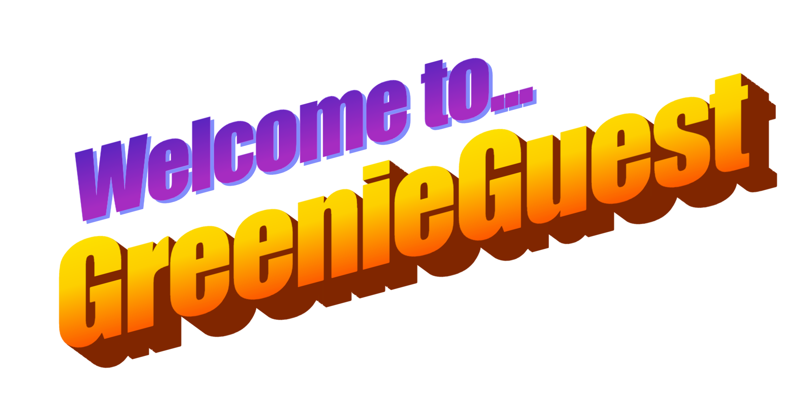
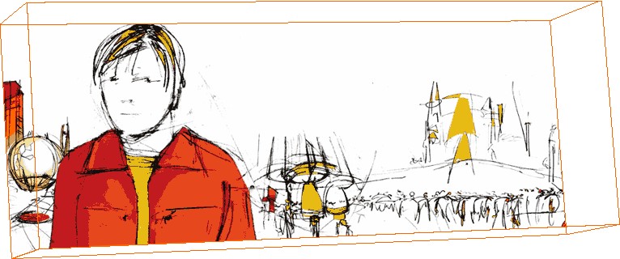

script didn't work!
~ Welcome ~
Hello, welcome to my personal website! This is the site I use to showcase all of my personal interests such as music, modding and other things I do such as my Youtube Channel and development. I also showcase some of my personal projects on here. I'm using Neocities as other people I knew (LegitSi) had it in their bio, I have always wanted my own site (and my own forum) and have used some webpage hosting sites before.
This site basically serves as a hub for all things GreenieGuest. Have fun exploring around!
Don't expect the Holy Grail of websites, I'm still somewhat new to HTML. (If it ain't broke, don't fix it.)

Artwork from Abandoned Pools' album Humanistic. Tommy Walter's work is seriously underrated, go check out Tely as well.